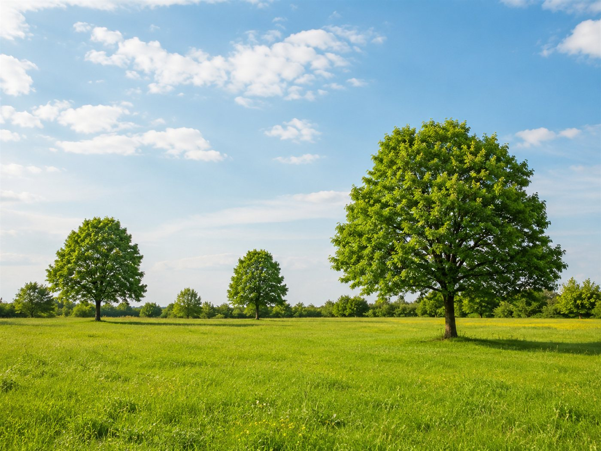
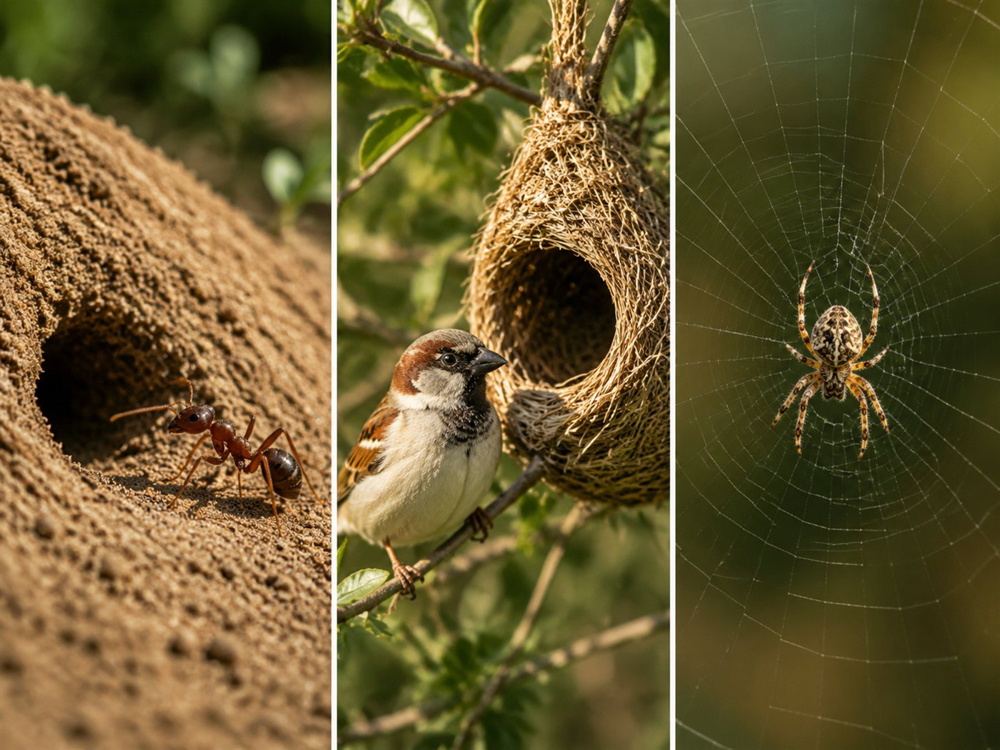
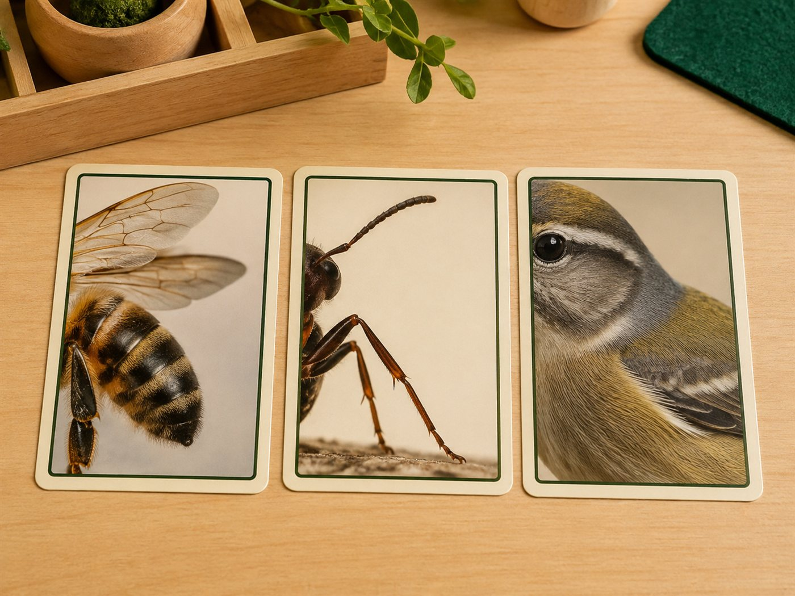

وحدة أنا مخلوق كرّمني الله — اللقاء السابع مفهوم التفكّر
المرحلة: تمهيدي (5–6 سنوات) · الركن الداعم: الساحة الخارجية والاكتشاف
المدة: نصف ساعة
سؤال التركيز
كيف أشكر اللهَ على نعمة العقل؟
بوصلةُ اللقاء: تفتح به المعلمةُ الحوار وتعود إليه عند الغلق. يقيسه سؤالُ التغذية الراجعة الأول ومؤشراتُ النجاح.
جوهر اللقاء
ميّزنا اللهُ بالعقل لنميّز الحقَّ من الباطل، ونشكره على هذه النعمة بالتفكّر: تدبّرٍ وتفكّرٍ في خلقه من حولنا.
تظهر موسّعةً في «المعنى المركزي» بسير اللقاء؛ لو لم يبقَ من الدرس إلا جملةٌ فهي هذه.
ورقة التدريس السريعة — خطوات اللقاء أثناء الدرس
① تهيئة وبداية اللقاء ٩ د
إشارة البدء: أنشودة «العلم هو النور الهادي»، ويتعرّف الأطفال على اللقاء بأنفسهم.
قوانين اللقاء وأهمّيّتها.
مراجعة اسم الله «الهادي» وهدايتِه لجميع المخلوقات لمصالحها.
② بناء وسير اللقاء ١٣ د
نعمة العقل وتمييز الحقّ من الباطل · معنى التفكّر وأنّه عبادة.
مشهد بديع خلق الله والآية ﴿وَسَخَّرَ لَكُمُ اللَّيْلَ وَالنَّهَارَ﴾.
صور الطبيعة والسماء (صباحًا/ليلًا) وترديد «سبحان الله الخالق».
مساكن الحيوانات · مراحل الخلق والآية ﴿لَقَدْ خَلَقْنَا الْإِنسَانَ فِي أَحْسَنِ تَقْوِيمٍ﴾.
③ إغلاق وتقويم ٨ د
لعبة «تفكّر» ببطاقات «فكّر لتعرف ما هذا المخلوق؟».
ترديد: «سبحان الله الخالق».
دعاء كفارة المجلس وختام اللقاء.
ربط الأسرة: ينظر وليُّ الأمر مع طفله إلى السماء صباحًا أو ليلًا (بلا نظرٍ مباشرٍ إلى الشمس)، ويقولان معًا: «سبحان الله الخالق». بلا واجبٍ كتابيّ.
ورقةٌ مرجعية سريعة أثناء الدرس — الخطوات فقط دون الأهداف والزيادات؛ والنصّ الكامل في تبويب «دليل الدرس كامل».
مسار بداية اللقاء
① تهيئة
إشارة بدء اللقاء
السلام عليكم ورحمة الله وبركاته يا طلاب العلم المباركين. نستمع الآن إلى إشارة بدء اللقاء لنعرف ماذا سيكون لقاؤنا.
الإشارة الثابتة: تُشغّل المعلمة أنشودة العلم هو النور الهادي علامةً ثابتةً لبدء لقاء علّمني ربي (لا تُسمّي المعلمة اللقاء)؛ فيتهيّأ الأطفال للجلوس والإنصات، ويتعرّفون بأنفسهم على اللقاء من إشارته.
فيديو إشارة بدء لقاء علّمني ربي — تستعين به المعلمة لضبط نغمة الإشارة (نفس إشارة المادة في جميع الوحدات).
الحزمُ مع الهدوء: تُدير المعلمةُ اللقاءَ بحزمٍ هادئ — صوتٌ لطيفٌ، وحدودٌ واضحة، وابتسامةٌ محتسبة — دون شدّةٍ تُنفّر ولا فوضى تُشتّت.
قوانين الفصل
🧹 أحافظ على نظافة فصليإماطة الأذى عن الطريق صدقة.
🔔 أستمع وأنصتفلا أقاطع الآخرين.
🔒 أحفظ لساني ويديالمسلم من سلم المسلمون من لسانه ويده.
🪑 أجلس جلسة صحيحةفي المساحة المخصصة لي.
💬 أرفع يدي للمشاركةالسؤال للجميع والإجابة لمن تختاره المعلمة.
مراجعة سريعة
تعرض المعلمةُ بطاقةَ الوحدة وتسألهم عن اسمها «أنا مخلوقٌ كرّمني الله»، ثم تراجع معهم ما تعلّموه بالأمس: أنّ اللهَ الهادي هدى جميعَ المخلوقات لمصالحها؛ تمهيدًا للحديث عن نعمةٍ عظيمةٍ ميّزنا اللهُ بها: العقلُ والتفكّر.
سير اللقاء
② بناء وسير
نعمةُ العقل: تشير إلى رأسها وتسألهم عن العضو المسؤول عن التفكير، وتُخبرهم أنّ النعمةَ التي يتعرّفون عليها اليوم هي العقل، وأنّ اللهَ ميّزنا به لنميّز الحقَّ من الباطل ونتّبع طريقَ الخير.
مشهدٌ من بديع خلق الله للتفكّر فيه
معنى التفكّر: ولأنّ اللهَ أنعم علينا بالعقل نشكره بأن نتفكّر — وهي عبادةٌ عظيمةٌ يحبّها الله: تدبّرٌ وتفكّرٌ في خلق الله من حولنا، نستعمل فيها أدواتِ التعلّم لنلاحظ بديعَ الخلق.
مشهدُ الخلق والآية: تعرض مشهدًا يتفكّرون فيه ثم تسأل: مَن خلق كلَّ هذه المخلوقات؟ اللهُ الخالق: ﴿وَسَخَّرَ لَكُمُ اللَّيْلَ وَالنَّهَارَ وَالشَّمْسَ وَالْقَمَرَ وَالنُّجُومُ مُسَخَّرَاتٌ بِأَمْرِهِ إِنَّ فِي ذَٰلِكَ لَآيَاتٍ لِّقَوْمٍ يَعْقِلُونَ﴾.
آياتُ الله في السماء: تعرض صورَ الطبيعة والسماء وتعطيهم مساحةً للتعبير مع ترديد «سبحان الله الخالق»: أيختلف لونُ السماء صباحًا عن الليل؟ ماذا نرى نهارًا؟ الشمس. وليلًا؟ القمرُ والنجوم — كلُّها آياتٌ تدلّ على عظمة الله.
التفكّرُ في المخلوقات والنفس: ما هذا الحيوانُ الذي يبني مسكنه؟ (النمل · العصفور · العنكبوت). وهذه المراحلُ (نطفة · علقة…) مراحلُ خلق مَن؟ الإنسان؛ خلقنا اللهُ في أحسن صورة: ﴿لَقَدْ خَلَقْنَا الْإِنسَانَ فِي أَحْسَنِ تَقْوِيمٍ﴾.
الجملة الختامية (المعنى المركزي): «أنعم اللهُ علينا بالعقل، ونشكره بأن نتفكّر في بديع خلقه ونقول: سبحان الله الخالق» — يردّدها الأطفال.
الوسائل والصور المعروضة في اللقاء

صور من الطبيعةيعبّر الأطفال عمّا يرونه: سبحان الله الخالق
السماء صباحًا وليلًاالشمس نهارًا · القمر والنجوم ليلًا

مساكن الحيواناتمَن هداها لبنائها؟ اللهُ الهادي

بطاقات «فكّر»يُخمّن المخلوقَ من وصفه
الصورُ أعلاه بمساراتٍ جاهزة تُوضَع فيها صورُ الوحدة عند توفّرها.
الإغلاق — التغذية الراجعة
③ إغلاق
أسئلة التغذية الراجعة (مع الإجابات النموذجية)
ما النعمةُ التي ميّز اللهُ بها الإنسان؟العقل.
ما معنى التفكّر؟تدبّرٌ وتفكّرٌ في خلق الله من حولنا، وهي عبادةٌ يحبّها الله.
اذكر آيةً في السماء صباحًا وأخرى ليلًا.الشمسُ نهارًا، والقمرُ (والنجومُ) ليلًا.
ماذا نقول حين نتفكّر في بديع خلق الله؟سبحان الله الخالق.
تختار المعلمة سؤالين أو ثلاثة بحسب وقت الأطفال، وتُرشد الطفل إلى الإجابة برفق. المعيار: ٣ إجابات صحيحة على الأقل.
النشاط المصاحب
نشاطُ هذا اللقاء تخمينٌ تفاعليّ ببطاقات «فكّر لتعرف ما هذا المخلوق؟».
«لُعبة تفكّر — فكّر لتعرف ما هذا المخلوق؟» (تخمين وتغذية راجعة)
الهدفأن يتفكّر الطفلُ في مخلوقات الله وأن يعبّرَ عن عظمة خلقه.
الأدواتبطاقات «فكّر لتعرف ما هذا المخلوق؟».
خطوات التنفيذ
سؤالٌ تمهيديّ: ما مخلوقاتُ الله التي شاهدناها؟
تعرض المعلمةُ بطاقاتِ «فكّر» ويخمّن الأطفالُ من الوصف: حشرةٌ هداها اللهُ للعمل بنظام، لها ملكةٌ وعاملات؟
حشرةٌ هداها اللهُ لبناء مسكنها في تربة الأرض؟ · آيةٌ نراها في الصباح؟
أسئلة أثناء النشاط
مَن خلق كلَّ هذه المخلوقات؟
ما آيةٌ من آيات الله في السماء؟
ماذا نقول عند التفكّر في الخلق؟
اختيارات حسب حاجة الطفل
الخجول: يخمّن بطاقةً واحدة، ويُثنى عليه بـ«جزاك الله خيرًا».
السريع: يخمّن ويذكر مَن خلقه ومن هداه.
كثير الحركة: يعرض البطاقاتِ لزملائه بدورٍ منظّم.
دعاء ختام النشاطسبحانك اللهمّ وبحمدك، أشهد أن لا إله إلّا أنت، أستغفرك وأتوب إليك.
اختيارات الأنشطة الإضافية
تلبية الاحتياجات الفرديةالبطيء: وصفٌ إضافيٌّ يساعده على التخمين. الخجول: «جزاك الله خيرًا» عند أوّل مشاركة. النشيط: يعرض البطاقات.
الربط بالمواد الأخرىكتابي المنير: آياتُ التفكّر في القرآن. أحبك ربي: اسمُ الله الخالق. مهاراتي: ملاحظةُ الفروق والتصنيف.
التوسيع والإثراءبيتي: يتفكّر في السماء ويقول «سبحان الله الخالق». ساحتي: تفكّرُ شجرةٍ أو حشرةٍ في الساحة.
اقتراحات للتكرار مراجعةٌ سريعةٌ ٣ دقائق بلعبة «فكّر» في مطلع الحصّة التالية.
كفارة المجلس · خاتمة اللقاء
سبحانك اللهم وبحمدك، أشهد أن لا إله إلا أنت، أستغفرك وأتوب إليك.
العلاقة التكاملية لهذا اللقاء
أساسُ الوحدة: ينتقل الطفلُ من معرفة الهداية (اللقاء السادس) إلى العمل: يشكر اللهَ بعقله فيتفكّر.
امتدادٌ في الوحدة: هو المفتاحُ لبقيّة لقاءات الوحدة: النبات، ورغيف الخبز، والنحلة، والنمل، والبحار — كلُّها تطبيقٌ على التفكّر.
هذا اللقاء: علّمني ربي — مفهوم التفكّر.
كيف يتكامل هذا اللقاء مع بقية دروس اليوم والوحدة؟
الساحة الخارجية
التفكّرُ في مخلوقات الله (شجرة · حشرة · سماء) وترديدُ «سبحان الله الخالق».
ركن الاكتشاف
لعبةُ «فكّر لتعرف ما هذا المخلوق؟» وربطُه بالخالق والهادي.
التقويم في منهج غرس القيم ثلاثي المراحل — يرصد الطفل قبل الدرس وأثناءه وبعده.
التقويم القبلي
ما العضوُ المسؤول عن التفكير؟
هل تعرف عبادةً نعملها بعقولنا؟
ماذا نقول حين نرى منظرًا جميلًا من خلق الله؟
التقويم التكويني
تعبير الطفل عمّا يراه في صور الطبيعة
ترديده «سبحان الله الخالق» أثناء الشرح
تمييزه بين ما نراه في السماء صباحًا وليلًا
مشاركته في تخمين بطاقات «فكّر»
التقويم النهائي
ما مخلوقاتُ الله التي شاهدناها؟ · بطاقاتُ «فكّر لتعرف ما هذا المخلوق؟» الثلاث
المعيار: إجابتان صحيحتان من ثلاث بطاقات
مؤشرات النجاح
يَنسب النعمةَ لله
يذكر أنّ اللهَ ميّزه بالعقل.
يعرف التفكّر
يذكر معنى التفكّر ولو مبسّطًا: أن أتفكّر في خلق الله.
يعبّر عن العظمة
يعبّر بجملةٍ عن عظمة خلق الله ممّا ردّدته المعلمة.
يسمّي الآيات
يسمّي آيتين من آيات الله في الكون.
الآداب الصفية لحظات تربوية ذهبية — تبدأ المعلمة كل فكرة بآية أو نص حديث، ولا يعلو صوتها على النص الشرعي. الحزم مع الهدوء دائمًا.
آداب المعلمة — مقدمة الرعاية
تبدأ بالبسملة والحمدلة والدعاء: «اللهم علّمنا ما ينفعنا وانفعنا بما علّمتنا».
تنطلق كل فكرة بآية أو نص حديث شريف.
الحزم مع الهدوء — فلا يعلو صوت المعلمة على النص الشرعي.
آداب الطفل
الجلوس في المساحة المخصصة له.
الاستماع وعدم المقاطعة.
المشاركة بلطف واحترام حديث الآخرين.
١ · شكرُ نعمة العقل
الموقفقال طفلٌ: «أنا الذي أفكّر وأعرف كلَّ شيء!»
الرد المقترح«العقلُ نعمةٌ ميّزنا اللهُ بها؛ نشكره بأن نتفكّر في خلقه ونميّز الحقَّ من الباطل. الحمد لله الذي وهبنا العقل».
القيمةشكر نعمة العقل — نسبةُ النعمة لله.
ربط بالدرس: ميّزنا اللهُ بالعقل ونشكره بالتفكّر.
٢ · التفكّرُ عبادةً
الموقفمرّ طفلٌ بمنظرٍ جميلٍ من خلق الله دون تفكّر.
الرد المقترح«تعالَ نتفكّرْ معًا؛ التفكّرُ في خلق الله عبادةٌ يحبّها. تفكّرْ… ثم قل: سبحان الله الخالق».
القيمةالتفكّر — تعظيم الخالق.
ربط بالدرس: التفكّرُ تدبّرٌ وتفكّرٌ في خلق الله.
٣ · تعظيمُ الله عند رؤية خلقه
الموقفتعجّب طفلٌ من منظر السماء ليلًا.
الرد المقترح«ما أعظمَ خالقَها! رفع السماءَ وزيّنها بالنجوم. حين نتعجّب من خلق الله نقول: سبحان الله الخالق».
القيمةتعظيم الله — تسبيحه عند بديع خلقه.
ربط بالدرس: الليلُ والنهارُ والشمسُ والقمرُ آياتٌ من آيات الله.
٤ · تمييزُ الحقّ من الباطل
الموقفتردّد طفلٌ بين فعلٍ حسنٍ وآخرَ سيّئ.
الرد المقترح«اللهُ وهبك العقلَ لتميّز الخيرَ من الشرّ؛ فكّرْ: أيُّهما يحبّه الله؟ واتّبعِ الخير لتكون من الفائزين».
القيمةتمييز الحقّ من الباطل — اتّباع الخير.
ربط بالدرس: ميّزنا اللهُ بالعقل لنميّز الحقَّ من الباطل.
٥ · حسنُ الإنصات والمشاركة بالدور
الموقفقاطع طفلٌ زميلَه أثناء تعبيره عن صورة الطبيعة.
الرد المقترح«انتظرْ دورَك يا بطل، لكلٍّ فرصةٌ ليعبّر عمّا يتفكّر فيه. حسنُ الإنصات من أدب المجلس. جزاك الله خيرًا».
القيمةضبط النفس — أدب الإنصات والمشاركة.
ربط بالدرس: نلتزمُ قوانينَ اللقاء لننتفعَ بالعلم.
القيمة تترسّخ حين تُعاش في البيت كما تُتعلَّم في الفصل — هذه التهيئات يُطبّقها ولي الأمر قبل الدرس وبعده.
١ · تهيئة وجدانية
أيُحدّث وليُّ الأمر طفلَه أنّ اللهَ ميّزه بالعقل، فيمتلئ قلبُه شكرًا وتعظيمًا لله.
بيقول له قبل النوم: «الحمد لله الذي وهبني عقلًا أتفكّر به في خلقه».
← يربط الطفلُ بين الدرس وشكرِ الله على نعمة العقل.
٢ · تهيئة معرفية
أيشرح لطفله أنّ التفكّر عبادةٌ: أن نتفكّر في خلق الله ونعظّمه.
بيسأله بلطف: «مَن خلق السماءَ والشمسَ والقمر؟ وماذا نقول حين نتفكّر فيها؟»
← يرسّخ المفهومَ قبل سماعه في الصف.
٣ · تهيئة حسية
أينظران معًا إلى السماء صباحًا أو ليلًا (بلا نظرٍ مباشرٍ إلى الشمس) ويقولان: «سبحان الله الخالق».
بيتفكّران في شجرة أو حشرةً ويتحدّثان عن بديع خلقها.
← يعيشُ الطفلُ المعنى واقعيًّا قبل عرضه في الصف.
٤ · تهيئة عملية بسيطة
أيختار مع طفله منظرًا واحدًا من خلق الله ليتحدّث عنه في الصف.
بيساعده على ترديد: «سبحان الله الخالق».
← مشاركةُ الأسرة تعطي الطفلَ حافزًا للعرض أمام زملائه.
٥ · تهيئة سلوكية
أيشجّع طفلَه على استعمال عقله في تمييز الخير من الشرّ واتّباعِ الخير.
بيذكّره أن يتفكّر في نعم الله فيزداد شكرًا وتعظيمًا.
← يصبح السلوكُ اليوميّ نفسُه جزءًا من الدرس.
٦ · تهيئة بالقصص
يحكي لطفله كيف تفكّر رجلٌ صالحٌ في خلق الله (السماء والنجوم) فازداد إيمانًا، ليتعلّم الطفلُ أنّ التفكّر عبادة.
← القصةُ تزرعُ حبَّ التفكّر وتعظيمَ الخالق في وجدان الطفل.
أسئلة تطرحها على طفلك
ما النعمةُ التي ميّز اللهُ بها الإنسان؟
ما معنى التفكّر؟
اذكر آيةً من آيات الله في السماء؟
ماذا نقول حين نتفكّر في بديع خلق الله؟
كيف نشكر اللهَ على نعمة العقل؟
‹
أولياء أمور الفصل
غرس القيم · دليل المعلمة
اليوم
بسم الله الرحمن الرحيم 🌿
السلام عليكم ورحمة الله وبركاته
📖 تعلّم أطفالُنا اليوم في «علّمني ربي» أنّ اللهَ ميّزنا بالعقل، وأنّنا نشكره على هذه النعمة بالتفكّر والتفكّر في بديع خلقه.
🏡 طلبنا للبيت: تفكّروا مع طفلكم منظرًا واحدًا من خلق الله (السماء أو شجرة أو طائرًا)، وقولوا معًا: «سبحان الله الخالق». ونذكّركم بألّا ينظر الطفلُ إلى الشمس مباشرة. من غيرِ واجبٍ كتابيّ.
💚 جزاكم الله خيرًا، ونسأل الله أن يبارك في أبنائنا وأن ينفعهم بما تعلّموا — فريق نادي غرس القيم
٨:٣٠ ص
اكتب رسالة…
انسخي الرسالة وأرسليها عبر واتساب أو تيليجرام — يُنسّق الغامق *هكذا* والمائل _هكذا_ تلقائيًا عند اللصق.
القيم الأساسية للدرس
شكر نعمة العقل
شكرُ الله على نعمة العقل التي ميّزنا بها.
التفكّر عبادة
التدبّرُ والتفكّرُ في خلق الله عبادةٌ يحبّها.
تعظيم الله وتسبيحه
تسبيحُ الله وتعظيمه عند رؤية بديع خلقه.
تمييز الحقّ من الباطل
استعمالُ العقل في تمييز الخير من الشرّ واتّباعِ الخير.
الملاحظة والتفكّر
حسنُ الملاحظة والتعبيرِ عمّا في الطبيعة من آيات.
أدب مجلس العلم
الالتزامُ بقوانين اللقاء والمشاركةُ بالدور.
كيف تغرس المعلمة القيم أثناء الدرس؟
عند كلِّ مشهد: «مَن خلق هذا؟ اللهُ الخالق» ثم «سبحان الله الخالق».
ربطُ العقل بالعبادة: «نشكر اللهَ على العقل بالتفكّر في خلقه».
تعزيزُ تمييز الخير من الشرّ: «فكّرْ أيُّهما يحبّه الله؟».
المعلمةُ تُظهر تعظيمَها لله: «سبحان مَن أبدع هذا الخلق وأتقنه».
المفاهيم الأساسية
العقل
النعمةُ التي ميّز اللهُ بها الإنسان ليميّز الحقَّ من الباطل.
التفكّر
تدبّرٌ وتفكّرٌ في خلق الله من حولنا، وهي عبادةٌ يحبّها الله.
آيات الله الكونية
ما خلقه اللهُ ممّا يدلّ على عظمته: الليلُ والنهارُ والشمسُ والقمرُ والنجوم.
التسخير
أنّ اللهَ جعل الليلَ والنهارَ والشمسَ والقمرَ والنجومَ مسخّراتٍ بأمره.
الأركان مساحاتٌ غنيّة بأدوات التعلّم، مدّتها ٣٠ دقيقة، يلعب فيها الأطفال ويستكشفون الأدوات بحرّية ومرح — لا التزام بآداب مجالس العلم كالمواد الأساسية. وتستقطع المعلمة وقتًا يسيرًا لتنفيذ نشاط تطبيقي سريع على الفكرة المركزية للدرس تأكيدًا وترسيخًا للمعلومة. أمام المعلمة ركنان مقترحان تختار بينهما (أو تنفّذهما معًا) بحسب جاهزية البيئة.
ضابط منهجي: الصورُ والوسائلُ لتقريب معنى التفكّر؛ ويبقى المقصودُ ترسيخَ أنّ اللهَ ميّزنا بالعقل فنشكره بالتفكّر في بديع خلقه. والصورُ بلا وجوهٍ للأرواح.
أتفكّر فيما حولي
ركن الساحة الخارجية
الأدوات والوسائل التعليمية
الساحةُ الخارجية بما فيها من نباتٍ وحشراتٍ وسماء، وعدسةٌ مكبّرة إن توفّرت، وبطاقاتُ ملاحظة.
قوانين الركن
البقاءُ في المساحة المحدّدة · الرفقُ بالمخلوقات · انتظارُ الدور · عدمُ النظر إلى الشمس مباشرة.
اللعب الحرّ في الركن
يستكشفُ الأطفالُ الساحةَ بحرّية، ويتفكّرون فيما فيها من خلق الله.
النشاط التطبيقي السريع
تستقطعُ المعلمةُ دقائقَ يسيرة لتطبيقٍ سريع على الفكرة المركزية: التفكّرُ في خلق الله عبادة.